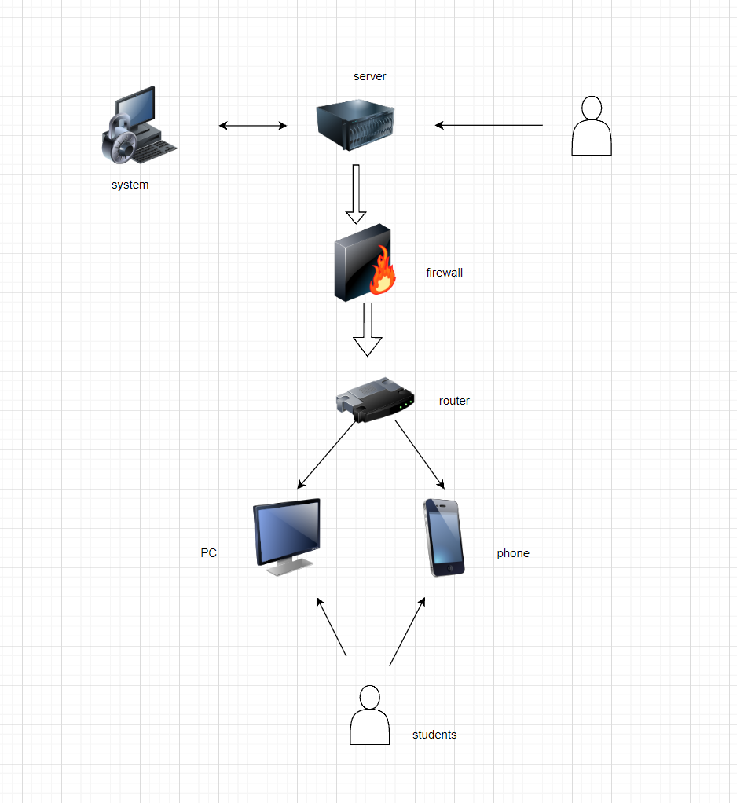
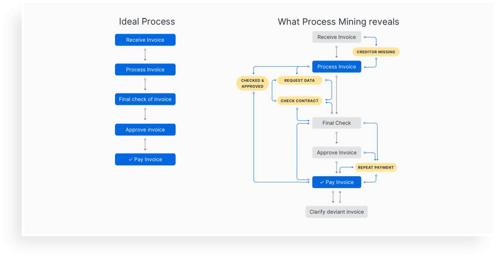

Robot process automation
Hardware: USB device
Software: RPA uibot
Values: stick to the original intention and form the core competitiveness of the enterprise based on the construction of the underlying soil. Values drive business growth and pay attention to product quality. We bring value to society or enterprises, and society or enterprises give us corresponding feedback and rewards.
Methods: for large-scale RPA projects, it is recommended to start the management consulting project separately, and follow-up implementation will learn from the management consulting results, involving the RPA projects of the whole department, which will inevitably have an impact on the posts and responsibilities of the change process. The relevant work of business process combing and management change should be followed up in time. The system implementation depends on mature products. The technical complexity is relatively low and the maturity of business blueprint is relatively high. Using similar ASAP methodology, waterfall model and agile model are not completely opposite and can complement each other
 